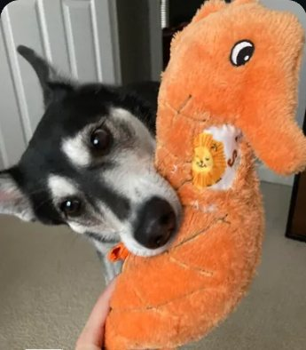

Get close up picture of your cat’s eyes and post it here
A social app for the small things in your day.
Your cat’s eyes, a silhouette from the camera roll, the sweatshirt you always come back to. Lifestyle Topics on Liora are prompts about everyday life, answered with a photo.
Topics in Lifestyle
Lifestyle is the busiest corner of Liora Social. Its Topics are simple: “get a close up picture of your cat’s eyes”, “cool silhouette photo from your camera roll”, “take a photo of your favorite t-shirt and tell us why it’s special”. You answer with a photo and a line or two, and it joins everyone else’s answers.
Projects like Pet Life, Photo Diary and Everyday Life collect these Topics in one place. Join the ones you like, keep a photo diary of your own, and follow along as other people add to theirs.
Cool silhouette photo from your camera roll
Outfit Rebuild
Take a photo of your favorite t-shirt and tell us why it’s special
Post your favorite souvenir and share a fun fact about it
Projects in Lifestyle


Pet Life
@petlife
 13
13 6
6 1
1


Photo Diary
@photodiary
 25
25 9
9 4
4


What people share in Lifestyle
From inside the app





Lifestyle on Liora, answered
- What is Lifestyle on Liora Social?
- Lifestyle is the category for everyday life: pets, food, outfits, souvenirs, places you walk through. Its Topics are photo prompts anyone can answer.
- Is Liora a social app without followers?
- Liora is organised around Topics and Projects instead of follower counts. You post to a prompt, and the people interested in that prompt see it.
- Can I keep a photo diary on Liora?
- Yes. Join a Project like Photo Diary, or start your own, and post to its Topics over time. The Contents tab keeps everything in one place.
- Is Liora suitable for sharing pet photos?
- Yes. Pet Life is one of the most active Projects, with Topics for cats, dogs, birds and everything else that lives with you.
Other categories
Art
Share sketchbook pages, studies and finished pieces to Topics made by other artists.
Open →Gaming
Post environment designs, character art, devlogs and screenshots to gaming Topics.
Open →Crafts & Making
Knitting, woodworking, ceramics, sewing, repairs.
Open →Entertainment
Fan art, the scene you keep rewatching, the album on repeat this week.
Open →Get Liora Social
Liora is a place for everyday people to share and connect around the things they love. iPhone with iOS 15.6 or later, and Android.
Questions, ideas, or want to meet other people on Liora? Join the Liora community on Discord.